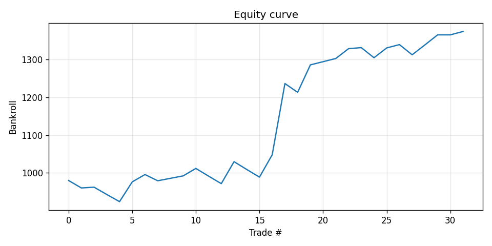
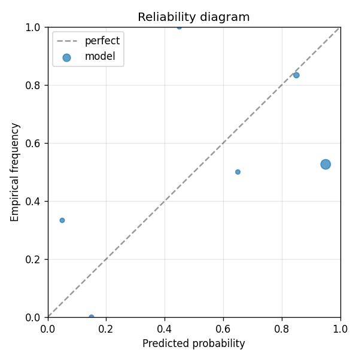

Model B for the dual A vs B PoC. Same data, same model class as earnings-beatmiss-A, PLUS: claude-sonnet news_scraper agents scrape news for each ticker around its earnings dates (per_entity_mode); per-event news text is Voyage-embedded into a 256-slot text block alongside the numerical features. The A vs B comparison isolates the text-feature contribution. If B beats A on Brier improvement + net return, the agent-army + Voyage methodology generalizes.
| metric | value |
|---|---|
| brier_model | 0.3533761070646009 |
| brier_market | 0.29218750000000004 |
| brier_improvement | -0.06118860706460083 |
| accuracy_model | 0.59375 |
| accuracy_market | 0.59375 |
| n_events | 32 |
| n_trades | 31 |
| hit_rate | 0.6129032258064516 |
| gross_return | 0.3745423436429989 |
| net_return | 0.3745423436429989 |
| sharpe | 1.5671684141940467 |
| max_drawdown | -0.07605158781884631 |
| label_shuffle_brier_improvement | null |

